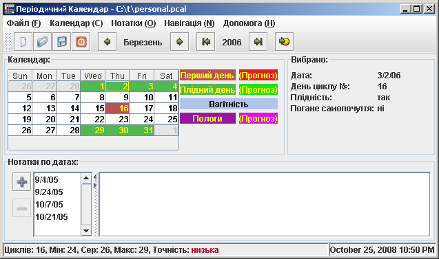
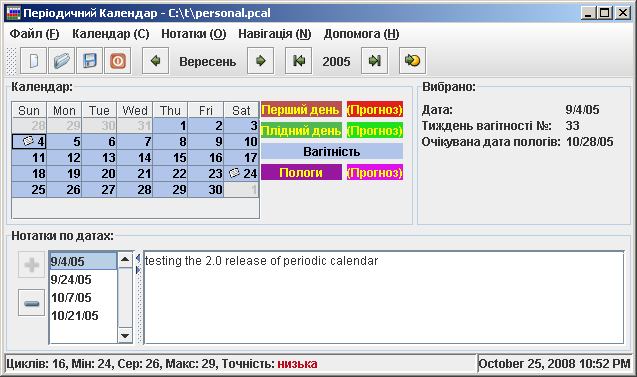
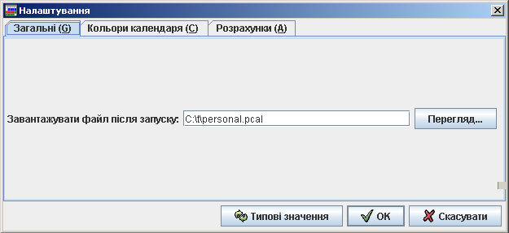
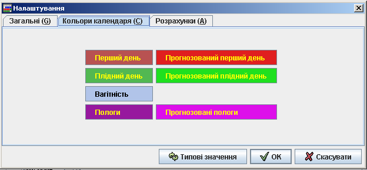
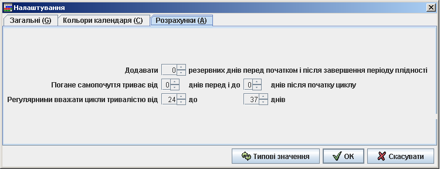

| Періодичний Календар: Посібник користувача | ||
|---|---|---|
| Назад | |
|
Основна інформація в головному вікні подається у вигляді календаря (Мал. 1).
Мал. 1. Головне вікно
Календар в головному вікні показує дні вибраного місяця і підсвічує перший день циклу червоним кольором а плідні дні зеленим (у типовому наборі кольорів). Крім того підсвічуються дні вагітності, день пологів, дні, до яких прикріплені нотатки. Дні, характеристики яких були розраховані алгоритмічно (як прогнози), підсвічуються світлішими кольорами, у порівнянні із днями, які були задокументовані самим користувачем. Справа від календаря можна побачити розшифровку що саме означає кожен колір. Самі кольори можна змінити на свій розсуд у діалозі налаштувань.
Справа від календаря подано інформацію про день, який було вибрано у календарі. Ця інформація включає обрану дату, кількість днів з початку циклу або кількість тижнів від початку вагітності, чи є цей день плідним, і чи може бути в цей день відчуття дискомфорту. Якщо інформація про цей день не базується на історичних даних, окремо зазначається що дані на цю дату є прогнозом. Користувач може настроювати кількість днів до початку і після початку циклу, протягом яких може бути відчуття дискомфорту у діалозі налаштувань
Початок нового циклу може бути зареєстрований або з контекстного меню календаря, яке показується після натискання правою кнопкою миші на якійсь даті, або використовуючи меню Календар->Додати запис про початку циклу. Якщо запис було додано помилково - його можна вилучити за допомогою контекстного меню календаря, або через головне меню Календар->Вилучити запис.
Коли ви додаватимете нові записи до календаря, ви можете зауважити, що прогнозований період плідності охоплює ширший проміжок часу, у порівнянні із періодами плідності у циклах, що вже закінчилися. Так стається через те, що початок і кінець плідного періоду залежить від тривалості циклу. Прогноз робиться у "безпечному" режимі з точки зору контрацепції, позначаючи всі дні, які мають хоча б мінімальну ймовірність плідності як плідні.
Стрічка статусу головного вікна показує загальну інформацію про зареєстровані цикли. Це включає загальну кількість циклів, мінімальну, середню та максимальну тривалість. Також, на основі відхилення тривалостей циклів від середнього значення, розраховується загальна точність прогнозів.
Переміщення між різними датами в календарі можна здійснювати або безпосередньо в календарі, або через панель інструментів або через підменю Навігація головного меню.
Використання наступних швидких комбінацій клавіш може прискорити вашу роботу з календарем:
Початок вагітності можна зареєструвати використавши контекстне меню календаря, або через меню Календар->Зареєструвати вагітність
Початок вагітності рахується з першого дня останнього циклу. Якщо Періодичний Календар знайде правдоподібні записи про попередні цикли у минулому, можливо програма покаже діалог Підтвердження початку вагітності у якому користувач може вибрати чи хоче він вважати початком вагітності дату першого дня останнього циклу, чи все ж першим днем вагітності вважати вибрану в календарі дату.
Під час вагітності головне вікно показує трохи іншу інформацію (Мал. 2).
Мал 2. Головне вікно - Вагітність
В межах періоду вагітності інформація про вибрану дату містить номер тижня вагітності та очікувану дату пологів.
Для завершення відслідковування вагітності можна зареєструвати народження дитини або переривання вагітності з будь-якої причини (використовуючи контекстне меню календаря або з головного меню Календар->Зареєструвати пологи).
Період вагітності показується від зареєстрованої дати початку вагітності до зареєстрованої дати пологів, дати переривання вагітності або до прогнозованої дати пологів (через 9 місяців).
Якщо до закінчення 9-и місяців буде зареєстровано менструацію, період вагітності буде малюватися до дати першої менструації.
Нижче від календаря головне вікно містить область показу нотаток, які можна вносити на будь-яку дату.
Нотатку для поточної дати можна додати використовуючи кнопку з плюсиком біля списку нотаток, або через підменю Нотатки головного меню.
Якщо вибраний день вже має якусь нотатку - вона буде автоматично показана в нижній частині головного вікна.
Вилучити нотатку для вибраної дати можна за допомогою кнопки з мінусом біля списку нотаток або через головне меню (Нотатки->Вилучити нотатку).
Діалог статистики показує загальну статистику по менструальних циклах, які було зареєстровано в системі. Крім цього в діалозі малюється гістограма тривалостей періодів (Мал. 3).

Мал. 3. Діалог статистики
Налаштування Періодичного Календаря можна змінювати у діалозі налаштувань який відкривається за допомогою головного меню Файл->Налаштування....
Секція Загальні дозволяє вибрати який файл має завантажуватися після старту програми. Завантаження цього файлу може бути скасоване, якщо буде вказано інший файл у параметрах командної стрічки (Мал. 4).
Мал. 4. Налаштування - Загальні
Секція Кольори календаря дозволяє змінювати кольори якими відображаються дні різних типів у календарі (Мал 5).
Мал. 5. Налаштування - Кольори календаря
Секція Розрахунки дозволяє настроювати параметри алгоритму прогнозування (Мал. 6).
Мал. 6. Налаштування - Розрахунки
Додавати ХХ резервних днів перед початком і після завершення періоду плідності може використовуватися для додавання "буферних" днів до прогнозованого періоду плідності, щоб збільшити безпечність таких розрахунків. Якщо ввести від'ємне значення - період плідності буде звужений, і покриватиме дні ймовірність завагітніти у які є найвищою.
Погане самопочуття триває від ХХ днів перед і до YY днів після початку циклу задає проміжок часу протягом якого жінка може відчувати дискомфорт. Ця величина не використовується в жодних розрахунках, а служить лише для зручності.
Параметр Регулярними вважати цикли тривалістю від XX до YY днів вказує які цикли повинні братися до уваги під час прогнозування. Може ставатися так, що деякі цикли можуть з певних причин бути суттєво довшими чи суттєво коротшими ніж звичайно. Якщо такі випадки є одиничними винятками, їхній вплив на розрахунки можна відкинути. Саме можливість появи таких "виняткових" циклів і робить календарний метод ненадійним, а часто і шкідливим при використанні методу природного планування сім'ї.
Функції імпорту та експорту доступні з підменю Файл головного меню.
На даний момент лише один формат є доступним для імпорту чи експорту - це є формат Періодичного календаря версії 1.x який є простим текстом з датами початку кожного зареєстрованого циклу.
Під час імпорту дати, які будуть вичитані зі вказаного файла будуть додані до дат поточного файла.
Майте на увазі, що Періодичний календар версій 1.x використовував лише дані про початок кожного циклу, тому під час експорту вся інша інформація (інформація про вагітність, нотатки) не буде експортована.
Періодичний календар може приймати єдиний параметр в командній стрічці. Очікується, що то буде назва файла, який треба відкрити після старту.
Приклад запуску:
java -jar pcal.jar c:\docs\myfile.pcal